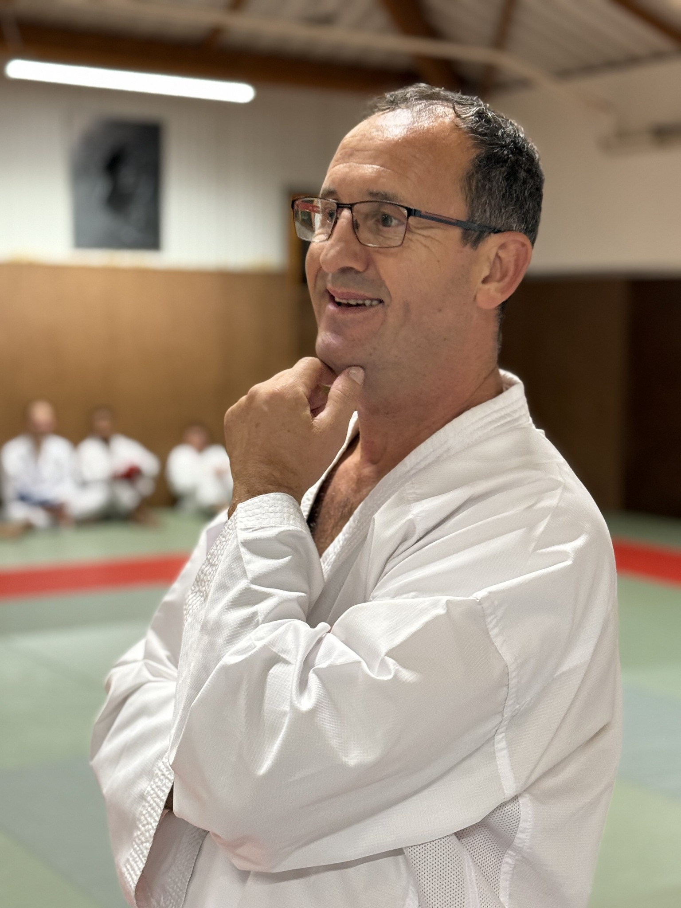
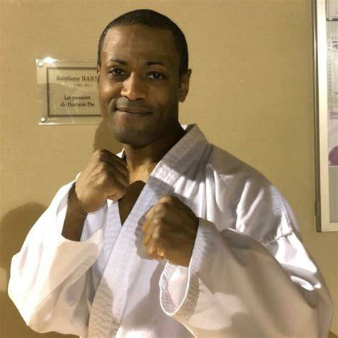

L'ASSOA Karaté
L’ASSOA Karaté est une association sportive déclarée fondée le 11 juin 1993 à Saint‑Ouen‑l’Aumône (Val‑d’Oise). Elle s’inscrit dans l’ASSOA, un club omnisports de la ville couvrant 13 disciplines (athlétisme, basket, judo, karaté, tennis, etc.), avec plus de 2 200 adhérents.
Chez ASSOA Karaté, nous sommes fiers de notre équipe d'entraîneurs et d'enseignants. Tous sont diplômés d'État et nombre d'entre eux sont d'anciens sportifs de haut niveau. Leur expertise et leur passion sont les piliers de notre enseignement, garantissant une transmission de qualité des techniques et des valeurs du karaté. Notre club est un véritable lieu de vie, où règne une ambiance familiale et conviviale. Au-delà des cours réguliers, nous proposons de nombreuses activités tout au long de la saison pour renforcer l'esprit de corps et l'épanouissement de nos membres : stages intensifs, activités sportives diversifiées, et événements sociaux. Chaque saison est riche en apprentissages et en partages.
Le dojo d'ASSOA Karaté est également reconnu pour la présence de plusieurs hauts gradés. Leur présence est un gage de la qualité et du sérieux de notre approche pédagogique. Ils sont des modèles pour nos élèves et contribuent activement à l'excellence de notre enseignement, offrant un accompagnement personnalisé pour chaque parcours.
Notre Équipe d'Entraîneurs

Jeff Collet
Ceinture Noire 8ème Dan
Professeur principal, champion de France, et directeur de la ligue du Val d'Oise. Expert reconnu avec plus de 40 ans d'expérience.

Sébastien Collet
Ceinture Noire 3ème Dan
Enseignant passionné par la transmission des valeurs et techniques fondamentales.

Nicolas Collet
Ceinture Noire 3ème Dan
Enseignant dévoué à l’apprentissage du karaté et à l'accompagnement des jeunes pratiquants.

Sandrine Nayen
Ceinture Noire 5ème Dan
Pédagogue animée par le désir de transmettre des valeurs fortes et de développer le club.

Freddy Naranin
Ceinture Noire 6ème Dan
Formateur guidé par la volonté de partager les fondements éthiques et techniques du karaté.
Horaires des Cours
Retrouvez ci-dessous le détail de nos cours par discipline et lieu. Pour toute information complémentaire, n'hésitez pas à nous contacter.
Cours de Self-Défense
| Jour | Heure | Lieu |
|---|---|---|
| Vendredi soir | 19h30 - 21h | Gymnase Marcel Pagnol (Saint-Ouen l'Aumône) |
| Dimanche matin | 10h - 11h30 | Gymnase de la Bussie (Vauréal) |
Pour l'ensemble des autres cours (Karaté, etc.) et tous les détails, veuillez télécharger nos différents documents:
Emplacements de nos Dojos
Gymnase Roger Couderc (Saint-Ouen l'Aumône) :33 Rue du Mail
95310 Saint-Ouen-l’Aumône
Voir sur Google Maps
Rue Léo Lagrange
95310 Saint-Ouen-l’Aumône
Voir sur Google Maps